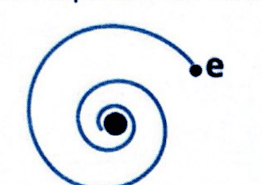
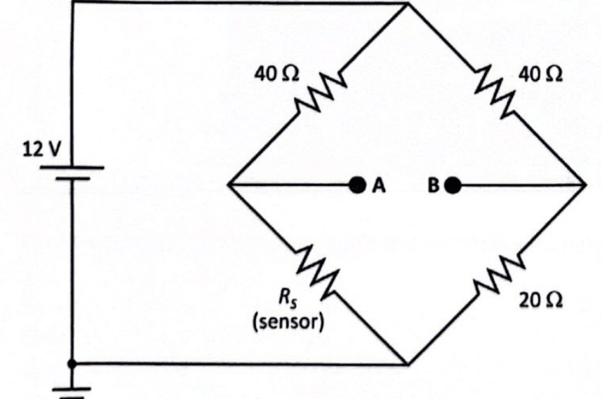
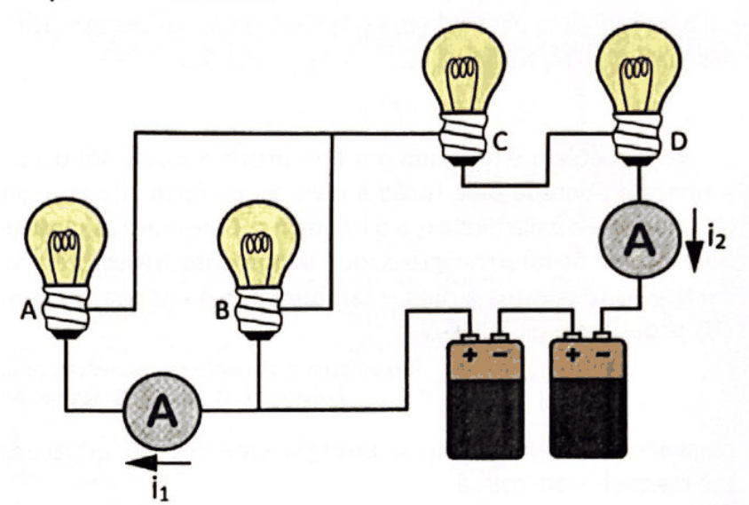
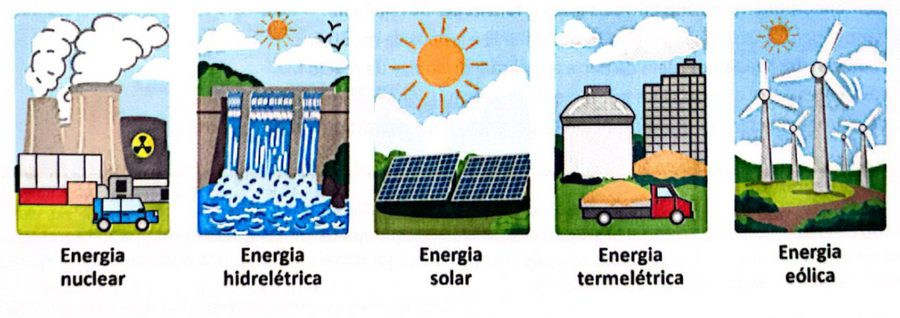
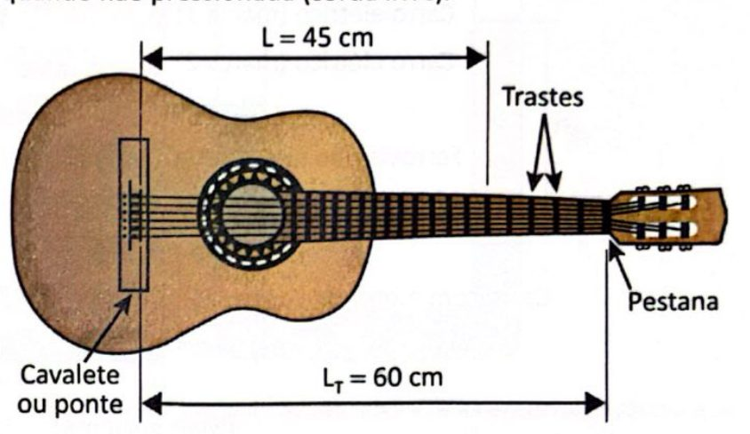
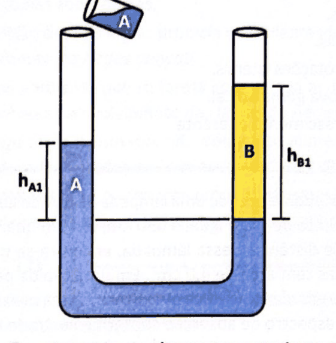
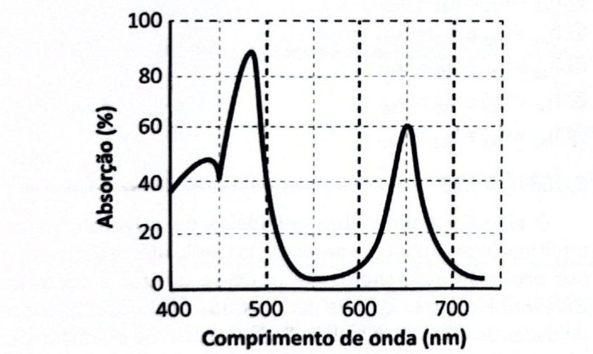

Vestibular · ENEM 2026 · 2º dia, caderno 5 amarelo
ENEM 2026: Física resolvida
As 14 questões de Física de Ciências da Natureza, com enunciado completo e resolução comentada. Tente responder antes: clique numa alternativa e a resolução abre logo abaixo.
Suas respostas
0 de 14 respondidas
Mostrar o gabarito
Questão 91
Eletrostática · lei de Coulomb e o átomo de Rutherford
O modelo de Rutherford para o átomo consiste em um núcleo bastante denso, pequeno e carregado positivamente, ao redor do qual orbitam partículas negativas. A interação atrativa entre o núcleo e os elétrons foi explicada posteriormente pela existência de uma força centrípeta de origem elétrica, cujo módulo, segundo a lei de Coulomb, é proporcional à constante eletrostática e ao quadrado da carga elementar, e inversamente proporcional ao quadrado da distância entre o núcleo e os elétrons. No entanto, o modelo planetário proposto por Rutherford não concorda com a teoria eletromagnética clássica, segundo a qual os elétrons descreveriam um movimento em espiral e se chocariam com o núcleo, o que não corresponde à realidade.

Qual gráfico apresenta a força de atração entre o núcleo e o elétron, em função do tempo para o átomo de hidrogênio, levando em consideração a teoria eletromagnética clássica?
Ver resolução
Pela lei de Coulomb, a força entre o núcleo (carga \(+e\)) e o elétron (carga \(-e\)) é
\[ F = \frac{k\,e^2}{r^2} \]
Segundo a teoria eletromagnética clássica, uma carga acelerada (o elétron em movimento circular) irradia energia. Perdendo energia, o elétron se aproxima do núcleo em espiral: \(r\) diminui com o tempo.
Como \(F \propto 1/r^2\), a força aumenta à medida que \(r\) diminui, e aumenta cada vez mais rápido: quando \(r \to 0\), \(F \to \infty\). O gráfico é crescente e com concavidade para cima.
(A) seria a órbita estável de Rutherford; (B) e (E) mostram a força diminuindo; (C) mostra crescimento linear, incompatível com \(1/r^2\).
Resposta: alternativa D
Questão 92
Termologia · potência térmica e conversão de unidades
O quadro lista o resultado da simulação feita por uma engenheira para dimensionar as fontes de calor no interior de um escritório onde trabalham 20 pessoas. Todos os equipamentos e as pessoas dissipam calor de acordo com os valores no quadro. Para manter constante a temperatura do escritório, ela precisa de um aparelho de ar-condicionado o mais econômico possível. Considere as paredes isolantes e o fator de conversão 1 Btu/h = 0,3 W.
Fonte de calor
Quantidade
Potência individual (W)
Lâmpada
10
100
Computador
20
150
Geladeira
2
500
Pessoa adulta
20
200
Qual é a capacidade de refrigeração, em British thermal unit por hora, do aparelho selecionado?
Ver resolução
Para manter a temperatura constante, o aparelho precisa retirar, por unidade de tempo, todo o calor gerado dentro da sala. Somamos as potências:
Convertendo com \(1\ \text{Btu/h} = 0{,}3\ \text{W}\):
\[ P = \frac{9000}{0{,}3}\ \text{Btu/h} = 30\,000\ \text{Btu/h} \]
Quem multiplica por 0,3 em vez de dividir chega a 2 700 Btu/h, que nem aparece nas alternativas.
Resposta: alternativa E
Questão 94
Física moderna · fusão nuclear e conservação do momento linear
Em um reator de fusão nuclear, é necessário produzir plasma a um milhão de graus centígrados para desencadear reações de fusão nuclear controladas. O plasma é formado por um gás ionizado que contém inicialmente deutério \(D^+\) e trítio \(T^+\) (isótopos do hidrogênio, com um e dois nêutrons, respectivamente). Nesse plasma, a energia térmica é suficientemente alta para desencadear uma reação de fusão nuclear na qual o núcleo do deutério, partícula \(D^+\), e o núcleo de trítio, partícula \(T^+\), colidem para formar uma partícula \(\alpha\) e um nêutron \(n\). A representação dessa reação de fusão é
\[ D^+ + T^+ \longrightarrow \alpha + n \]
A partícula \(\alpha\) é formada por dois prótons e dois nêutrons. A energia liberada pela fusão é dividida na forma de energia cinética entre a partícula \(\alpha\) e o nêutron \(n\). Considere as massas do próton e do nêutron iguais, que o momento linear total das partículas reagentes é nulo e também que a energia cinética dos produtos é de 20 MeV.
Nessa reação de fusão, a energia cinética do nêutron, em megaelétron-volt, é
Ver resolução
Como o momento linear inicial é nulo, os produtos saem em sentidos opostos com momentos de mesmo módulo:
\[ p_\alpha = p_n = p \]
Escrevendo a energia cinética em função do momento, \(E_c = \dfrac{p^2}{2m}\). Com \(m_n = m\) e \(m_\alpha = 4m\):
A partícula mais leve leva a maior parte da energia. A alternativa A é a energia da partícula \(\alpha\), não a do nêutron.
Resposta: alternativa E
Questão 95
Eletrodinâmica · ponte de Wheatstone e divisor de tensão
A mudança da resistência elétrica de alguns materiais em função da temperatura é utilizada para construir sensores que podem medir desde a temperatura ambiente até a de fornos. A figura representa um circuito elétrico usado para fazer a correspondência entre temperatura e tensão elétrica, na qual a resistência elétrica \(R_s\) varia com a temperatura segundo a expressão \(R_s = 20\,[1 + 0{,}002\,(T - 300)]\). A temperatura é medida em kelvin.

A tensão elétrica, em volt, entre os pontos A e B da figura, quando o sensor estiver à temperatura de 800 K é de
Repare que a 300 K (\(R_s = 20\ \Omega\)) teríamos \(V_A = 4\ \text{V} = V_B\): a ponte fica equilibrada e a tensão é nula. O aquecimento desequilibra a ponte, e é isso que o sensor mede.
Resposta: alternativa D
Questão 96
Ondulatória · radar e velocidade das ondas eletromagnéticas
Uma instalação de radar, usada para rastrear aviões, emite ondas eletromagnéticas com velocidade estimada de 300 mil quilômetros por segundo. Um avião que saiu da rota foi localizado em um raio de 75 quilômetros do aeroporto onde fica o radar. O operador usou o tempo dispendido para enviar e receber a resposta com a finalidade de estimar a localização do avião.
Quem esquece a volta encontra \(2{,}5 \times 10^{-4}\) s, valor que não está entre as alternativas.
Resposta: alternativa E
Questão 99
Eletrodinâmica · associação de lâmpadas e amperímetros
Em uma maquete de uma sala, foram instaladas duas lâmpadas (A e B) nas paredes e duas lâmpadas (C e D) no teto, conforme a figura. Essas lâmpadas são alimentadas por duas baterias idênticas em série. Todas as lâmpadas são incandescentes e brilham igualmente quando conectadas individualmente a uma das baterias. Considere ideais todos os elementos do circuito. Os amperímetros indicam a corrente elétrica que passa no fio no qual estão inseridos.

As correntes medidas nos amperímetros serão iguais e não nulas quando a(s)
Ver resolução
Seguindo os fios a partir do polo positivo: a corrente chega a um nó e se divide entre a lâmpada A (passando pelo amperímetro de \(i_1\)) e a lâmpada B. As duas se reencontram no fio de cima e seguem, em série, por C, D e pelo amperímetro de \(i_2\) até o polo negativo. Então:
\(i_2\) é a corrente total do circuito;
\(i_1\) é só a parte que passa por A: \(i_2 = i_1 + i_B\).
\[ i_1 = i_2 \iff i_B = 0 \]
Isso acontece quando a lâmpada B está queimada (ramo aberto): toda a corrente passa por A, C e D, e os dois amperímetros marcam o mesmo valor, não nulo.
(A) Com todas ligadas, \(i_1 = i_2/2\).
(B) Com A queimada, \(i_1 = 0\).
(D) e (E) C e D estão em série com todo o circuito: se uma delas queimar, \(i_1 = i_2 = 0\).
Resposta: alternativa C
Questão 111
Energia · fontes renováveis e não renováveis
A busca por fontes alternativas de energia é uma das grandes preocupações da humanidade devido ao possível esgotamento dos combustíveis fósseis e à degradação ambiental causada por eles. Como a demanda de energia cresce significativamente, há um grande investimento em outros tipos de geração de energia, tais como hidrelétrica, nuclear, solar, termelétrica a biomassa e eólica.

Dentre as fontes de energia citadas, o tipo de energia oriunda de uma fonte não renovável, que independe das condições climáticas para ser obtida, é a
Ver resolução
A questão pede duas condições ao mesmo tempo: fonte não renovável e independente do clima.
Hidrelétrica (chuvas e vazão dos rios), solar (insolação) e eólica (ventos) são renováveis e dependem do clima.
A termelétrica a biomassa usa combustível renovável (a biomassa é replantada).
A nuclear usa urânio, um minério com reservas finitas, e a fissão ocorre no reator independentemente do tempo lá fora.
Resposta: alternativa A
Questão 113
Ondulatória · cordas vibrantes e frequência
O comprimento da parte oscilante da corda de um violão determina a nota musical emitida. No braço do violão, são colocadas peças metálicas espaçadas chamadas trastes. Quando as cordas são pressionadas entre os trastes, os comprimentos de suas partes oscilantes são reduzidos, gerando ondas de diferentes frequências. Algumas notas com os valores aproximados de suas frequências são apresentadas no quadro. A figura ilustra um violão com cordas de comprimento total vibrante (\(L_T\)) igual a 60 cm. Considere o modo de vibração fundamental (\(n = 1\)) e que as frequências de vibração são inversamente proporcionais ao comprimento da parte oscilante da corda. Sabe-se que a primeira corda oscila com frequência de 660 Hz (a nota mi) quando não pressionada (corda livre).

Frequência das notas musicais, em hertz, no sistema temperado
Oitava
Dó
Ré
Mi
Fá
Sol
Lá
Si
3ª
130
147
165
175
196
220
248
4ª
260
294
330
349
392
440
495
5ª
520
587
660
698
784
880
990
6ª
1 040
1 174
1 320
1 397
1 568
1 760
1 980
Ao pressionar a primeira corda, de forma que a sua parte oscilante tenha 45 centímetros, e fazê-la vibrar, qual é a nota emitida pela corda?
Ver resolução
No modo fundamental, \(f = \dfrac{v}{2L}\). A velocidade na corda não muda (mesma tração e mesma corda), então \(f \cdot L\) é constante:
Encurtar a corda para \(\tfrac{3}{4}\) do comprimento multiplica a frequência por \(\tfrac{4}{3}\): é o intervalo de quarta justa, de mi para lá.
Resposta: alternativa D
Questão 114
Energia · eficiência energética e unidades (kWh → J)
Uma fabricante de automóveis anunciou o plano de eletrificar toda a sua frota até o ano 2030. Determinado protótipo é parte fundamental dessa estratégia por ter autonomia de 1 000 km e um gasto energético de 1 kWh para cada 10 km, quando ocupado por quatro pessoas. O gráfico apresenta, para vários meios de transporte, o gasto energético por passageiro, considerado como um dos fatores determinantes para o desenvolvimento de políticas públicas de regulação dos meios de transporte.
De acordo com o gráfico, quantos meios de transporte apresentam maior eficiência energética que esse protótipo?
Ver resolução
Precisamos expressar o gasto do protótipo na unidade do gráfico, joule por metro por passageiro. Como \(1\ \text{kWh} = 1000\ \text{W} \cdot 3600\ \text{s} = 3{,}6 \times 10^{6}\ \text{J}\):
\[ \frac{360}{4} = 90\ \text{J por metro passageiro} \]
Mais eficientes são os meios com gasto menor que 90: velomóvel (18) e bicicleta (60). Pedonalidade (132) já gasta mais.
Esquecer de dividir pelos quatro passageiros dá 360 J/m e leva à alternativa D (cinco meios).
Resposta: alternativa B
Questão 118
Hidrostática · lei de Stevin e vasos comunicantes
A figura ilustra uma forma de medir a densidade relativa de dois líquidos, A e B, imiscíveis, colocando-os em um tubo em forma de U. Atingido o equilíbrio hidrostático, medem-se as alturas, \(h_{A1}\) e \(h_{B1}\), das colunas dos líquidos, a partir de sua superfície até o nível da linha de separação entre eles. Considere que um volume adicional de líquido A é colocado na coluna esquerda do tubo, conforme a figura. Após o equilíbrio ser restabelecido, medem-se as novas alturas, \(h_{A2}\) e \(h_{B2}\), da mesma maneira, comparando-as com as alturas anteriores.

A comparação entre as novas alturas e as anteriores revela que
Ver resolução
Pontos do mesmo líquido (A) no mesmo nível têm a mesma pressão. Igualando as pressões no nível da separação, nos dois ramos (lei de Stevin):
Ao acrescentar líquido A, a quantidade de B não muda. Como o tubo tem seção constante, a coluna de B continua com a mesma altura: \(h_{B2} = h_{B1}\). Pela equação acima, então,
O líquido A adicionado apenas eleva o conjunto todo: a linha de separação sobe, e as duas colunas sobem juntas, sem mudar as alturas medidas a partir dela.
Resposta: alternativa A
Questão 121
Óptica / energia · intensidade luminosa e absorção
Um estudante acende uma lâmpada de 6 W de luz vermelha (comprimento de onda igual a 650 nm) em um quarto escuro. A 1,0 m de distância dessa lâmpada, encontra-se uma planta cujas folhas têm área de 4,0 cm². Em uma rápida pesquisa na internet, o estudante verifica que plantas dessa mesma espécie possuem espectro de absorção conforme ilustrado no gráfico, que apresenta a porcentagem de luz incidente absorvida em função do comprimento de onda.

Considere a lâmpada como uma fonte puntiforme cuja intensidade luminosa é dada pela razão entre a sua potência e a área da superfície esférica formada a uma distância \(r\) da fonte. Utilize 3 como valor aproximado para \(\pi\).
Com base nessas informações e no gráfico, qual é o valor mais próximo da energia, em joule, que cada folha absorverá a cada segundo?
Ver resolução
A potência da lâmpada se espalha sobre uma esfera de raio \(r = 1{,}0\) m:
A alternativa C é a energia que chega à folha, sem considerar a absorção.
Resposta: alternativa E
Questão 128
Óptica · espalhamento da luz
Ao trafegar à noite, é necessário manter os faróis dos veículos acesos. Quando a umidade relativa do ar é baixa, o motorista consegue ter boa visibilidade da pista. No entanto, em noites em que há neblina, essa visibilidade é reduzida.
Nessa situação, a visibilidade reduzida deve-se à
Ver resolução
A neblina é formada por gotículas de água suspensas no ar, com tamanho comparável ou maior que o comprimento de onda da luz visível. A luz do farol, ao atingir essas gotículas, é desviada em todas as direções (dispersão, ou espalhamento).
Parte da luz volta para os olhos do motorista, formando uma “parede” clara à frente do carro, e menos luz chega à pista e retorna dela. Por isso o contraste cai e a visibilidade diminui. É também por isso que o farol baixo funciona melhor que o alto na neblina.
(B) A polarização não reduz a quantidade de luz que ilumina a pista.
(C) e (E) O farol continua emitindo a mesma potência.
(D) Não há “solubilização” de gotículas no ar.
Resposta: alternativa A
Questão 130
Hidrodinâmica · equação da continuidade
Um jardineiro está irrigando as plantas de um jardim com uma mangueira. Ele estica completamente a mangueira para se aproximar de algumas flores mais afastadas, sem, no entanto, alcançá-las. Daí, ocorre-lhe que obstruir a extremidade da mangueira com o polegar faz com que o jato de água atinja uma distância maior, comparativamente com a situação sem essa ação, permitindo-lhe molhar aquelas flores mais afastadas.
Essa alteração no alcance do jato de água deve-se ao aumento do(a)
Ver resolução
Pela equação da continuidade, a vazão é o produto da área da seção pela velocidade do fluido:
\[ Q = A \cdot v \quad\Rightarrow\quad A_1 v_1 = A_2 v_2 \]
Ao tapar parte da saída com o polegar, a área \(A\) diminui. Para escoar a água que chega pela mangueira, a velocidade de saída \(v\) aumenta.
O alcance de um lançamento cresce com a velocidade inicial (no lançamento oblíquo, \(D = \dfrac{v^2 \sin 2\theta}{g}\)), então o jato vai mais longe.
Vazão, volume e massa lançados por segundo não aumentam (no máximo diminuem um pouco), e a densidade da água não muda.
Resposta: alternativa A
Questão 133
Eletrodinâmica · energia elétrica e consumo em espera
O quadro foi retirado de um manual que apresenta as especificações e a potência de um aparelho de TV.
Alimentação
110-220 V e 50-60 Hz
Potência
Média em uso
158 W
Em espera
1 W
Se uma pessoa assistiu à TV durante 4 horas e no restante do dia o aparelho permaneceu em espera, qual é a porcentagem da energia utilizada em espera quando comparada com o total de energia utilizado?
Ver resolução
Energia é potência vezes tempo, \(E = P \cdot \Delta t\). Em um dia, a TV fica 4 h em uso e 20 h em espera: